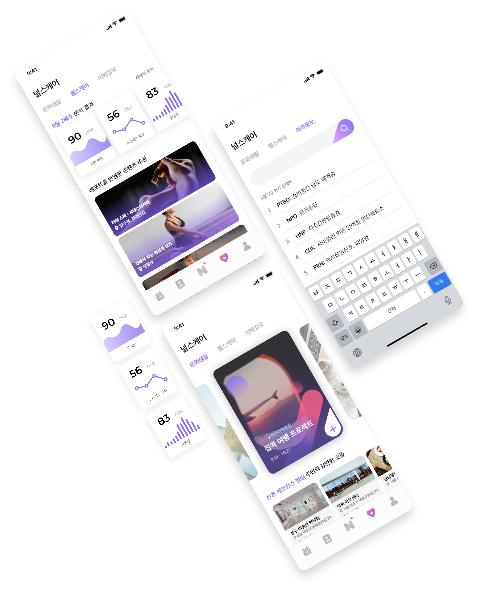

널스케어
오직 나만을 위한 콘텐츠들
스트레스 지수를 체크하여 맞춤 문화생활을 추천받고,
나에게 필요한 의학 정보를 찾아 맞춤 공부하세요.
국내 간호사 1인당 관리해야 하는 환자의 수는 16.4명으로
다른 나라 보다 3배 이상 많은 숫자입니다.
왜곡된 간호인력문제에서 오는 과도한 업무 스트레스와 태움으로 인해
신입 간호사의 45.4%는 퇴사를 선택한다고 합니다.
입원병동에서 일하는 간호사들은 어떤 문제점을 느끼고 있을까요?
1년차 간호사,안수진
들어온 지 얼마 안 돼서 모르는 게 많은데
눈치 보여서 이것저것 물어보지도 못하겠어요.
병원에서는 근무 내내 정신없이 바쁜데 수기로 하나하나
작성하는 게 시간이 오래 걸려서 불편해요.
5년차 간호사,유희진
3년차 간호사,국해성
과도한 업무에 항상 긴장해야 하고,
태움 문화 때문에 너무 힘들고 괴로워요.
그래서 우리는 널시를 통해 입원병동 간호사들에게
스마트하고 편리한 근무 시스템을 제안합니다.
병원, 간호사, 스마트 워치, 휴대폰은 모두 널시를 통해 연결되어 있습니다.
Hospital
병원 EMR 차트 전달
일정 및 업무 정보 공유
Nurses
Watch
앱 주요 기능 연결
앱 세부 기능 연결
Phone
간호사의 업무 보조와 케어를 제공하는 서비스를 웨어러블
디바이스와 스마트 폰 APP 두 가지로 제공합니다.
널시는 간호사와 간호사의 업무 환경을 연동 및 연결해 더 나은 시스템을 제안합니다.
이러한 널시의 연결성을 그라디언트를 통해 표현했습니다
많은 내용을 읽어도 피로감이 없는 산 세리프체를 선정하여 신뢰도와 가독성을 높였습니다.
신뢰와 새로운 느낌을 주는 ‘마일드 퍼플’과 온화함과 생기를 상징하는 ‘라이블리 핑크’ 컬러를
사용하여 이제껏 없던 간호사만을 위한 새로운 업무보조 서비스의 방향성을 표현합니다.
정보가 많이 담겨있는 서비스 특성 상 내용과의 정확한 구별을 하기 위해 면 아이콘으로
진행하였으며 라운딩을 통해 널시의 이미지와 조화를 이룰 수 있도록 하였습니다.

오늘 해야 할 일을 타임라인으로 받아보고 체크하세요.
인수인계장을 모바일로 작성하여 간편하게 주고 받을 수 있어요!
나와 동료의 듀티표를 확인하며 스케쥴을 작성하세요.
이번 달 근무 시간과 휴가도 확인할 수 있답니다.

환자의 상태를 이모지를 사용하여 간편하게 등록하고, EMR 연동으로 내 담당 환자의 상태를 체크하세요.

스트레스 지수를 체크하여 맞춤 문화생활을 추천받고,
나에게 필요한 의학 정보를 찾아 맞춤 공부하세요.
업무 도중 급하게 필요한 기능들을 스마트 워치를 통해
빠르게 이용할 수 있어요.

환자의 상태를 이모지를 사용하여 간편하게 등록하고, EMR 연동으로 내 담당 환자의 상태를 체크하세요.
업무 도중 정신적, 신체적 위협이 느껴지면 워치의 디지털 크라운을 눌러
병원 시큐리티와 동료 간호사에게 도움을 요청할 수 있어요.

yumio3o@naver.com
+ 82) 10-3902-7146
sinhee97@naver.com
+ 82) 10-8299-1384
sy_kelly@naver.com
+ 82) 10-4161-3715

unjena_rim@naver.com
+ 82) 10-2488-0271

sangwon0730@gmail.com
+ 82) 10-9256-1428